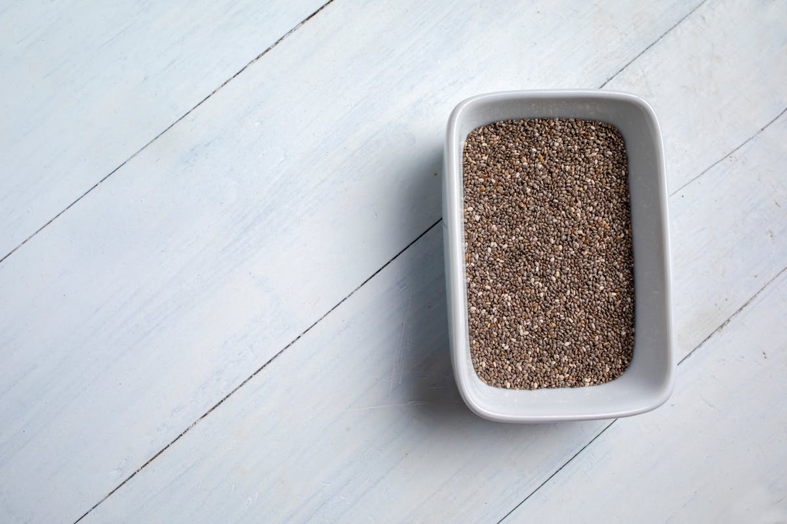
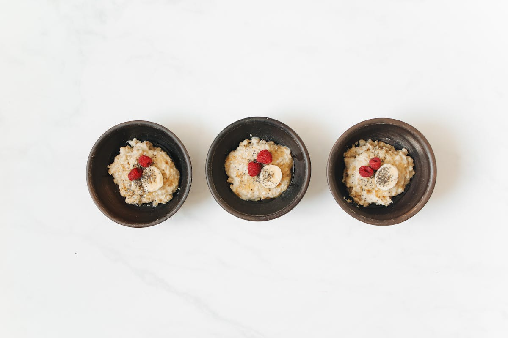
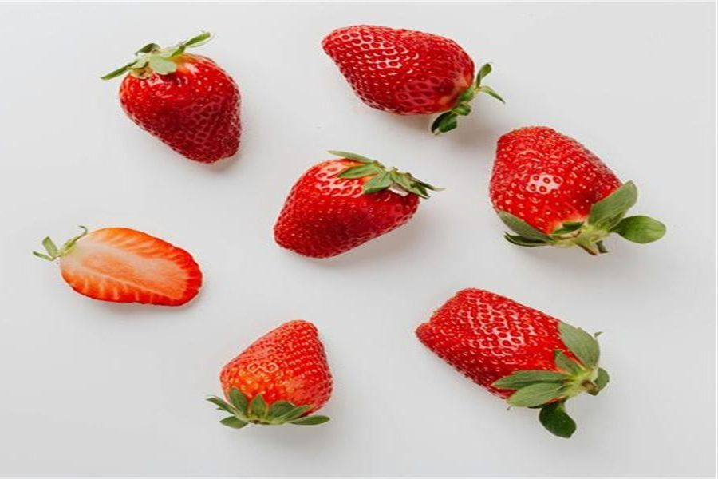
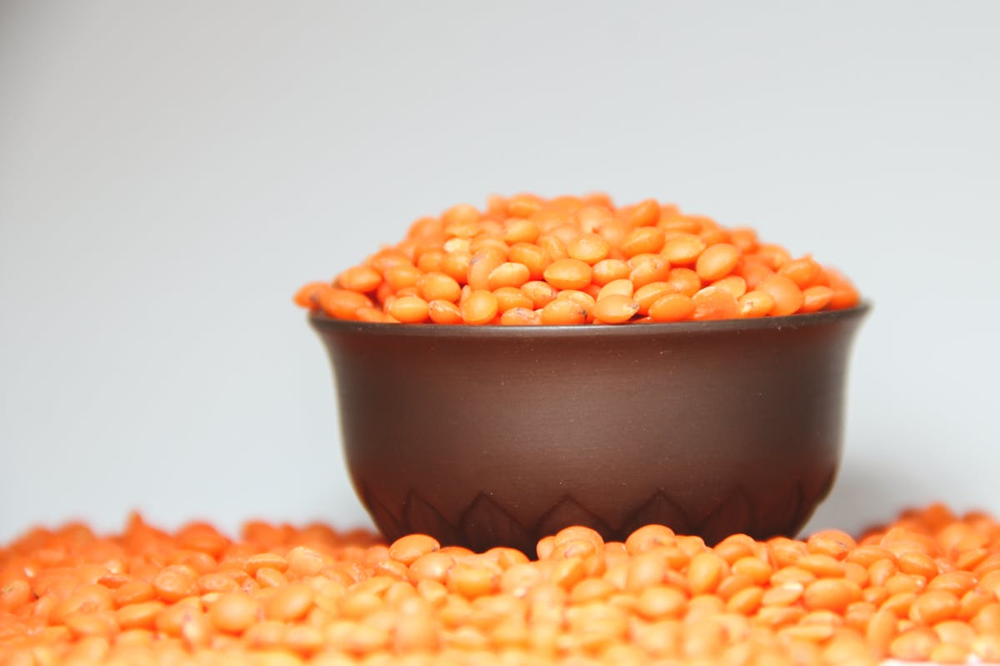
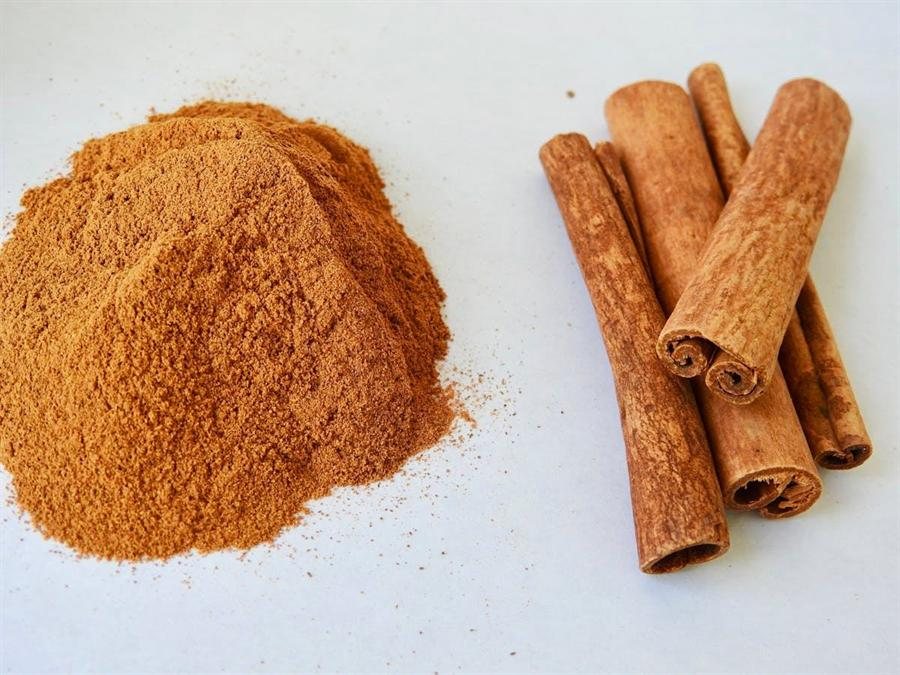
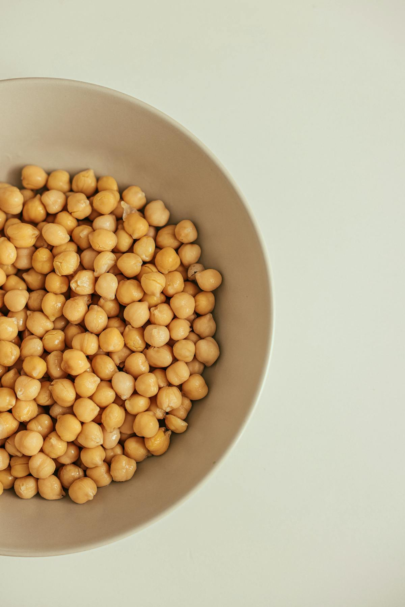
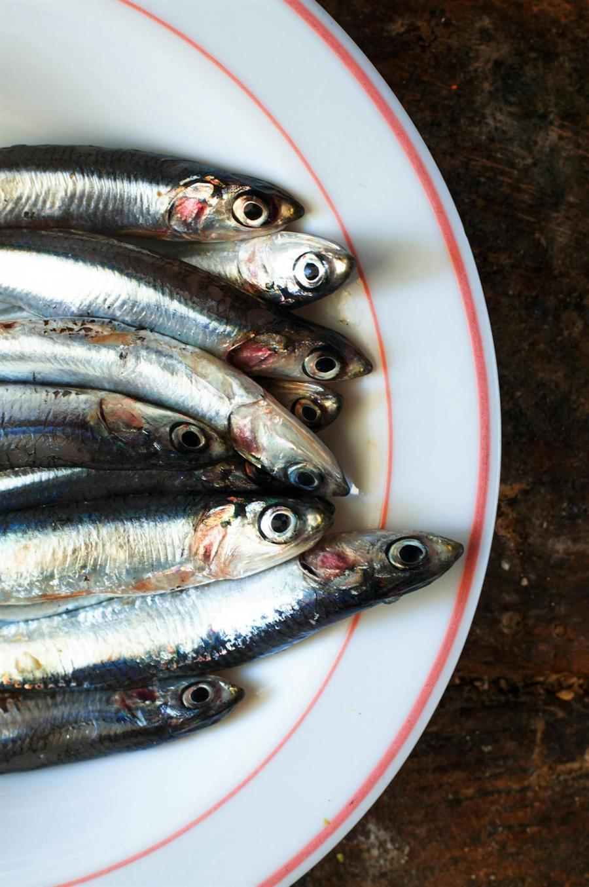
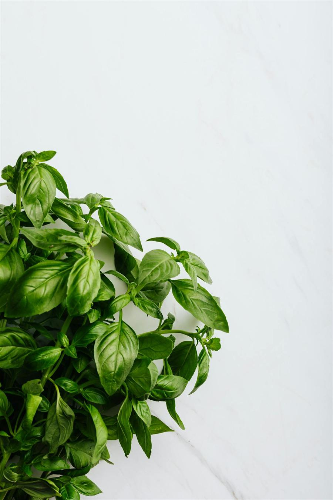
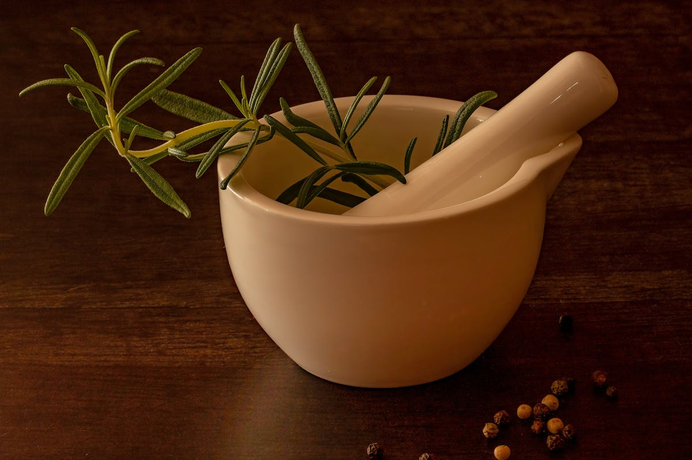

Start with a pattern, not a perfect diet
Pick foods you already like
Anti-inflammatory eating is easier when it begins with familiar foods: berries in breakfast, olive oil on vegetables, salmon or sardines when fish works for you, and oats or legumes when you need a filling base.
Build simple meals
Most meals can start with one colorful plant food, one protein or whole-food base, one healthy fat, and one herb or spice. That is enough structure to make better choices without turning every meal into a project.
Use the guides when you need direction
The food pages explain individual ingredients. The guides help you turn them into breakfasts, snacks, drinks, grocery lists, and first steps you can actually repeat during a normal week.
Browse by Category
All Foods

Blueberries
Antioxidant-rich berries for breakfasts and snacks.
Fruit
Salmon
Omega-3-rich fish for anti-inflammatory meals.
Fish
Broccoli
Cruciferous vegetable for simple savory meals.
Vegetable
Turmeric
Golden spice with curcumin for cooking and drinks.
Spice
Olive Oil
Healthy-fat staple for cooking and dressings.
Healthy Fat
Spinach
Nutrient-dense leafy green for meals and smoothies.
Vegetable
Green Tea
Daily drink with polyphenols and simple habit value.
Drink
Garlic
Savory staple for practical home cooking.
Spice
Walnuts
Omega-3-rich nuts for snacks and toppings.
Nut
Chia Seeds
Fiber-rich seeds for breakfasts and puddings.
Seed
Oats
Whole-grain breakfast staple with easy pairings.
Whole Grain
Ginger
Warming spice for teas, cooking, and smoothies.
Spice
Avocado
Creamy fruit with healthy fats for meals.
Fruit
Strawberries
Sweet berries for snacks and breakfast bowls.
Fruit
Lentils
Protein-rich legume for soups and bowls.
Legume
Sweet Potato
Beta-carotene-rich root vegetable for meals.
Vegetable
Pomegranate
Antioxidant fruit for seeds, bowls, and juice.
Fruit
Kale
Nutrient-dense green for salads and smoothies.
Vegetable
Almonds
Versatile nuts for snacking and cooking.
Nut
Matcha
Concentrated green tea powder for daily drinks.
Drink
Flax Seeds
Omega-3-rich seeds for smoothies and baking.
Seed
Cinnamon
Warm spice for oatmeal, drinks, and baking.
Spice
Tomato
Lycopene-rich fruit for fresh and cooked meals.
Vegetable
Quinoa
Complete protein grain for bowls and salads.
Whole Grain
Chickpeas
Flexible legume for hummus, meals, and snacks.
Legume
Sardines
Affordable small fish with omega-3 benefits.
Fish
Basil
Fresh herb for savory flavor and simple meals.
Herb
Rosemary
Savory herb for roasting and home cooking.
Herb
Avocado Oil
High-heat cooking oil with healthy fats.
Healthy Fat
Cherries
Anthocyanin-rich fruit for snacks and recovery.
FruitPractical Guides
Best Anti-Inflammatory Foods
Start with the foods most people find easiest to use every week.
Foods for Bloating and Gas
A practical guide to gentler foods to try and healthy foods that may still bother some people.
Anti-Inflammatory Breakfast Ideas
Simple breakfasts built from oats, berries, seeds, and other reliable staples.
Anti-Inflammatory Drinks
Easy drink habits like green tea and matcha without overcomplicating your day.
Anti-Inflammatory Snacks
Simple snack ideas that feel realistic between meals.
Foods by Category
Use fruits, vegetables, healthy fats, legumes, and more to build your own shortlist.
How to Start an Anti-Inflammatory Diet
A friendly guide for making the first few changes feel manageable.
Anti-Inflammatory Grocery List
A practical shopping list for meals you can actually make this week.
How to use this site
If you are new
Begin with How to Start an Anti-Inflammatory Diet, then use the grocery list to choose a few foods for this week.
If you want quick meals
Use breakfast ideas, snacks, and the category pages to find combinations that fit your routine.
If you are comparing foods
Open individual food pages to see what each food is useful for, how to eat it, how to shop for it, and where it fits in a broader eating pattern.